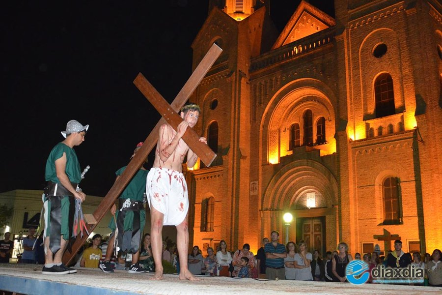
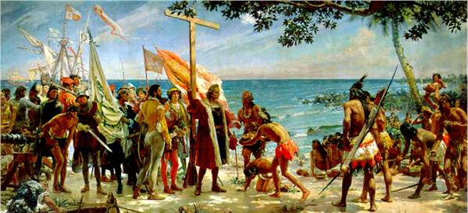

Características

Desde la época colonial, las procesiones, dramatizaciones y ritos católicos se representaban en plazas y templos, especialmente en ciudades como Sucre, Potosí y La Paz.

En zonas rurales, los ritos prehispánicos se mezclan con la fe cristiana, como sucede con las ofrendas a la Pachamama junto con las procesiones de Cristo.

Las comunidades indígenas asumieron las tradiciones cristianas, pero las expresaron con sus propias formas de vestir, música y espiritualidad, dando lugar a una identidad religiosa mestiza.